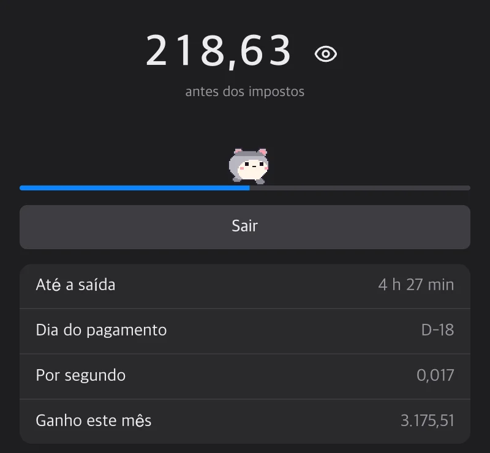
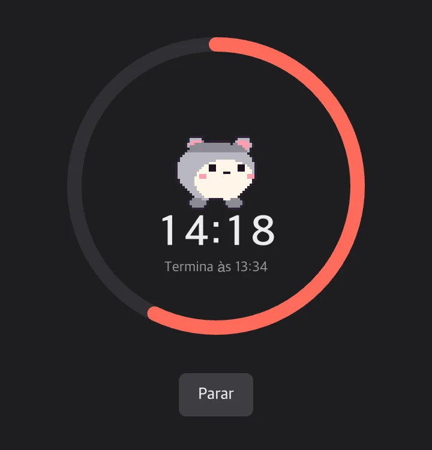

Chat
O que você escreve flutua sobre a sua cabeça
O que você escreve no chat aparece como balão sobre o seu personagem na tela dos seus amigos. Com respostas, reações, edições e marcas de leitura.
A galera do seu grupo mora na parte de baixo da sua tela. Escreva algo e um balão aparece sobre a sua cabeça.
O que você escreve aparece sobre o seu personagem na tela dos amigos.
O que você escreve no chat aparece como balão sobre o seu personagem na tela dos seus amigos. Com respostas, reações, edições e marcas de leitura.
Várias fotos de uma vez, busca de GIFs e prévia de links no chat.
Desenhe e vai para todo o grupo. Um pergaminho aparece do lado da orelha de quem mandou, e ao clicar o rabisco é redesenhado traço por traço.
As mensagens e as fotos saem cifradas e são apagadas em 24 horas. Sem anúncios nem analytics.
Clique, arraste e faça carinho nos personagens dos amigos.
Clique no personagem de um amigo e o item que você escolheu voa em arco e acerta ele.
Mexa o mouse por cima e saem corações.
Se você não para de dar comida, ele cresce um pouco; com umas dez mordidas em um minuto, faz cocô. Limpe com a vassoura.
Coloque :emote: na mensagem, ou faça as poses de oi, feliz, nham e pulo.
Seu personagem e seus balões quem escolhe é você.
Crie personagens, itens e emotes com uma imagem de uma IA ou uma que você mesmo desenhou. Como criar
No Halloween, clique na abóbora e saem doces. A cor e os enfeites do seu balão você escolhe.
Fica com você enquanto trabalha.
O que você ganha hoje sobe a cada segundo. Dá para mostrar sobre o personagem e esconder o valor com um atalho. Seu salário fica só neste dispositivo.

Escolha 15, 25 ou 50 minutos ou um horário de fim, e os personagens dos seus amigos ficam escondidos até lá. Seus amigos veem 'Focado' e, se jogarem algo, você diz 'Shh!'.

Passe o mouse em um amigo e aparece o status dele. Se ele se afasta sai um z, se demora Zzz, e se fecha o app ele fica apagado.
A mesma sala pelo navegador do celular, sem instalar nada. Quem entra pelo celular aparece como um espírito azul sobre o próprio corpo.
A galera do trabalho, a galera do bairro. Troque de grupo, e cada janela de chat pode ver um grupo diferente.
Coisas que você faz com clique, arrastando, escrevendo ou pelo menu.
Falar
Brincar
Enfeitar
Em dia
A lista completa está em Recursos… no menu da bandeja do app.
É de graça. Tem um limite de personagens e itens que você pode enviar. Consiga um código de convite ou crie um grupo novo.
É de graça. Tem um limite de personagens e itens que você pode enviar.
As mensagens e as fotos saem cifradas do seu computador, então a rede pelo caminho não consegue ler. Em 24 horas elas são apagadas.
No celular você entra na mesma sala pela web. Brincar com os personagens é no app do computador.
Sim. Envie os seus desenhos ou peça para uma IA. Veja a página como criar.
Compare com o SHA-256 que aparece embaixo da área de download. No Windows use Get-FileHash <caminho> no PowerShell; no Mac, shasum -a 256 <caminho> no Terminal.
No Mac, vá em Ajustes do Sistema > Privacidade e Segurança e escolha "Abrir mesmo assim". No Windows, clique em "Mais informações" > "Executar assim mesmo".